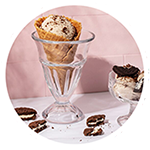
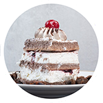
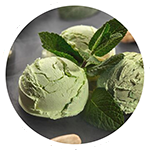
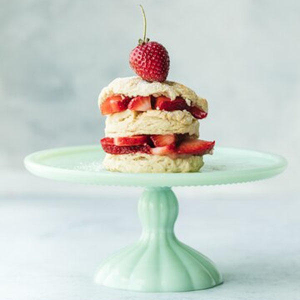

Магазин мороженого
Что мы делаем
Наш магазин готов предложить
вам самые разнообразные виды
мороженого на любой вкус!

Классическое
Всеми любимое молочное
лакомство со вкусом на
ваш выбор!

Торты
Целый торт,
основной ингредиент
которого - мороженое!

Веганское
Мороженое из молока
растительного
происхождения!
ИНТЕРНЕТ-МАГАЗИН
Доставка мороженого
по Краснодару
с 8:00 до 20:00
Классическое
и веганское мороженое
В настоящее время быстро растёт количество современных покупателей, которые следуют принципам здорового и экологичного питания. Чтобы любимое лакомство было не только доступно каждому, но и сохраняло традиционную структуру и консистенцию мороженого, продукты животного происхождения можно заменить, используя альтернативные ингредиенты.
Подготовка заказа
Заказы на самовывоз, оформленные
до 16:00,будут готовы в тот же день!
Пожалуйста, укажите предпочтительную
дату и время самовывоза до оформления заказа.
Мы отправим уведомление, как только
ваш заказ будет готов к самовывозу.
